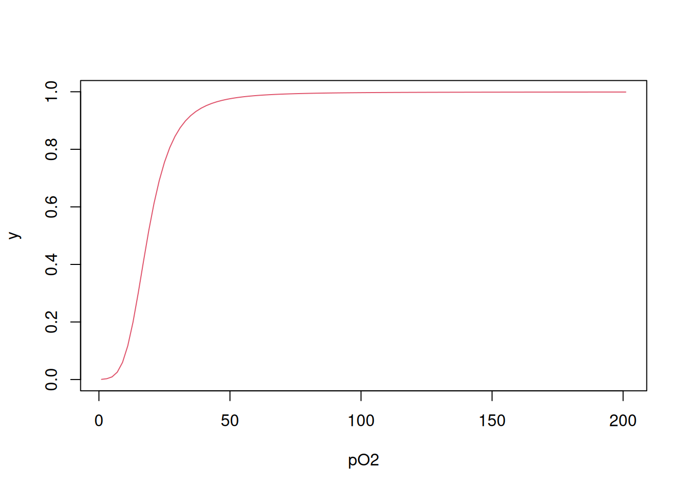
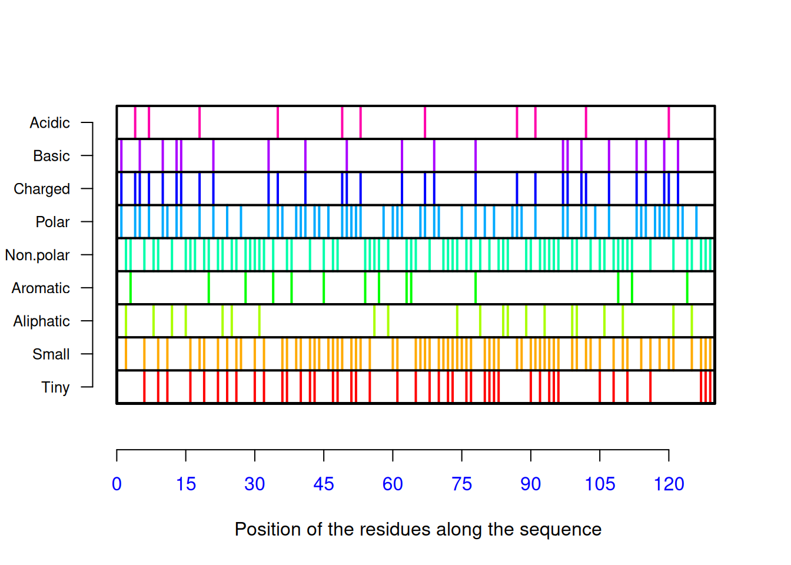

seq <- "MKWVTFISLLFLFSSAYSRGVFRRDAHKSEVAHRFKDLGEENFKALVLIAFAQYLQQCPFEDHVKLVNEV
TEFAKTCVADESAENCDKSLHTLFGDKLCTVATLRETYGEMADCCAKQEPERNECFLQHKDDNPNLPRLV
RPEVDVMCTAFHDNEETFLKKYLYEIARRHPYFYAPELLFFAKRYKAAFTECCQAADKAACLLPKLDELR
DEGKASSAKQRLKCASLQKFGERAFKAWAVARLSQRFPKAEFAEVSKLVTDLTKVHTECCHGDLLECADD
RADLAKYICENQDSISSKLKECCEKPLL EKSHCIAEVENDEMPADLPSLAADFVESKDVCKNYAEAKDVF
LGMFLYEYARRHPDYSVVLLLRLAKTYETTLEKCCAAADPHECYAKVFDEFKPLVEEPQNLIKQNCELFE
QLGEYKFQNALLVRYTKKVPQVSTPTLVEVSRNLGKVGSKCCKHPEAKRMPCAEDYLSVVLNQLCVLHEK
TPVSDRVTKCCTESLVNRRPCFSALEVDETYVPKEFNAETFTFHADICTLSEKERQIKKQTALVELVKHK
PKATKEQLKAVMDDFAAFVEKCCKADDKETCFAEEGKKLVAASQAALGL"Proteins
Amino acid composition
Proteins are biopolymers formed by 20 amino acids. In this way, it is possible to easily evaluate the composition of any protein available in a database, such as the PDB seen in the Amino Acids chapter. Taking human serum albumin as an example, code AAA98797 from the National Center for Biotechnology Information, it is possible to count the 20 types of amino acids that make up its sequence. To do this, simply consider the FASTA sequence as a string and extract the quantity of each letter, using the stringr library, as follows.
First, obtain the FASTA sequence of serum albumin.
You can see that there are empty spaces, which can be omitted for aesthetic reasons or not, since the stringr package will not count them, unlike more specific packages for biological sequences, such as seqinr seen previously. But if you want to omit these spaces, just run the code below.
seq <- seq[seq != "\n"]
seq # boolean operation != means "no"Next, you get the quantity of a specific letter in the sequence.
library(stringr)
aa <- str_count(seq, pattern = "A")
aa[1] 63Note that the
str_count command only counts the letter “A” in the sequence. This way, you can get all 20 amino acids by repeating this command.library(stringr)
ala <- str_count(seq, pattern = "A")
arg <- str_count(seq, pattern = "R")
asn <- str_count(seq, pattern = "N")
asp <- str_count(seq, pattern = "D")
cys <- str_count(seq, pattern = "C")
glu <- str_count(seq, pattern = "E")
gln <- str_count(seq, pattern = "Q")
gly <- str_count(seq, pattern = "G")
his <- str_count(seq, pattern = "H")
ile <- str_count(seq, pattern = "I")
leu <- str_count(seq, pattern = "L")
lys <- str_count(seq, pattern = "K")
met <- str_count(seq, pattern = "M")
phe <- str_count(seq, pattern = "F")
pro <- str_count(seq, pattern = "P")
ser <- str_count(seq, pattern = "S")
thr <- str_count(seq, pattern = "T")
trp <- str_count(seq, pattern = "W")
tyr <- str_count(seq, pattern = "Y")
val <- str_count(seq, pattern = "V")And, to visualize the result in a table:
aa_3abrev <- c("Ala", "Arg", "Asn", "Asp", "Cys", "Glu",
"Gln", "Gly", "His", "Ile", "Leu", "Lys", "Met",
"Phe", "Pro", "Ser", "Thr", "Trp", "Tyr", "Val")
aa_quant <- c(ala, arg, asn, asp, cys, glu, gln, gly,
his, ile, leu, lys, met, phe, pro, ser, thr, trp,
tyr, val) # vector with the quantity of amino acids in the protein
aa_seq <- data.frame(aa_3abrev, aa_quant) # dataframe with the results
colnames(aa_seq) <- c("Tipo", "Qtde") # rename the columns
# Amino acid composition in human serum albumin
aa_seq # displays the table Tipo Qtde
1 Ala 63
2 Arg 27
3 Asn 17
4 Asp 36
5 Cys 35
6 Glu 62
7 Gln 20
8 Gly 13
9 His 16
10 Ile 9
11 Leu 64
12 Lys 60
13 Met 7
14 Phe 35
15 Pro 24
16 Ser 28
17 Thr 29
18 Trp 2
19 Tyr 19
20 Val 43‘R’ has some commands for the aesthetic generation of tables, including those included in the ‘knitr’ package, as follows:
library(knitr) # to generate the table
knitr::kable(aa_seq, caption = "Composition of amino acids in human serum albumin.", "pipe") # table| Tipo | Qtde |
|---|---|
| Ala | 63 |
| Arg | 27 |
| Asn | 17 |
| Asp | 36 |
| Cys | 35 |
| Glu | 62 |
| Gln | 20 |
| Gly | 13 |
| His | 16 |
| Ile | 9 |
| Leu | 64 |
| Lys | 60 |
| Met | 7 |
| Phe | 35 |
| Pro | 24 |
| Ser | 28 |
| Thr | 29 |
| Trp | 2 |
| Tyr | 19 |
| Val | 43 |
Note that, despite the result obtained, there was some work to obtain the composition of the albumin, from the 20 modified lines for each amino acid. A more practical alternative is to consider a loop that performs the extraction of the desired information for a vector containing the abbreviation of a letter for each amino acid.
aa_1abrev <- c("A", "R", "N", "D", "C", "E", "Q", "G", "H", "I", "L", "K", "M",
"F", "P", "S", "T", "W", "Y", "V")
for (i in aa_1abrev) {
aa_quant2 <- str_count(seq, pattern = aa_1abrev)
return(aa_quant2) # optional syntax for function with only one output
}
aa_seq <- data.frame(aa_3abrev, aa_quant2) # dataframe with results
colnames(aa_seq) <- c("Type", "Quantity") # rename columns
knitr::kable(aa_seq, caption = "Amino acid composition in human serum albumin
(using loop).", "pipe") # table| Type | Quantity |
|---|---|
| Ala | 63 |
| Arg | 27 |
| Asn | 17 |
| Asp | 36 |
| Cys | 35 |
| Glu | 62 |
| Gln | 20 |
| Gly | 13 |
| His | 16 |
| Ile | 9 |
| Leu | 64 |
| Lys | 60 |
| Met | 7 |
| Phe | 35 |
| Pro | 24 |
| Ser | 28 |
| Thr | 29 |
| Trp | 2 |
| Tyr | 19 |
| Val | 43 |
This way you get the same result, but with less memory consumption and higher processing speed, characteristics in any programming logic. Although the loop exemplifies automation, the
str_count function retains an internal loop, since an element counting function is applied to a sequence, based on a predefined pattern (the vector aa_1abrev, in this case). This way, the script can be further simplified, without the need for the external loop.str_count(seq, pattern = aa_1abrev) [1] 63 27 17 36 35 62 20 13 16 9 64 60 7 35 24 28 29 2 19 43Several R functions exhibit this internal loop, which can be applied to vectors, lists, matrices and dataframes (datasheets). The simplest involve the application of a preprogrammed R function to a vector, for example:
y <- c(1, 2, 4, 8, 16, 32)
mean(y)[1] 10.5sum(y)[1] 63Another common vectorization is the application of a user function to a vector, reducing the need for repeated commands, as in the example below:
# Estimated average size of a protein from the number of
# amino acid residues
prot.size <- function(x) {
MM <- x * 110 # 'x' represents the number of amino acids in the protein
return(MM)
}
prot.size(575) # number of amino acid residues in human albumin[1] 63250Another form of vectorization involves the
apply family of functions, consisting of the apply, sapply, tapply, lapply, and mapply commands. Although they have faster processing than external loop functions for using very complex matrices, each one is aimed at a distinct object or specific R situation (returning a list, vector or matrix), allows the use of subset (data subsets), uses R functions or functions previously defined by the user, and runs in just one command line. These advantages contrast with the use of for loops applied to vectors. However, vectorization works very well when you want to apply or map a function to a vector/matrix/list. When, on the other hand, you want to apply a function whose result depends on more than one vector/matrix/list, the for loop becomes indispensable, as in the titration of weak acids in the Amino Acids chapter.Regardless of the method used (and here it is worth highlighting the so-called good programming practices in the construction of scripts 1), it is possible to build a more general composition for the set of residues of the protein. Thus, we can obtain any quantitative relationship from the sequence, since we are treating it as a string. For example, a table containing the class of each amino acid that makes up the sequence.
aa_ac <- aa_seq[4, 2] + aa_seq[6, 2] # AA acids
aa_bas <- aa_seq[2, 2] + aa_seq[9, 2] + aa_seq[12, 2] # AA basics
aa_arom <- aa_seq[14, 2] + aa_seq[18, 2] + aa_seq[19, 2] # AA aromatics
aa_alif <- aa_seq[10, 2] + aa_seq[11, 2] + aa_seq[15, 2] + aa_seq[1, 2] +
aa_seq[20, 2] # Aliphatic AA
aa_pol <- aa_seq[3, 2] + aa_seq[5, 2] + aa_seq[7, 2] + aa_seq[8, 2] +
aa_seq[13, 2] + aa_seq[16, 2] + aa_seq[17, 2] ## Neutral polar AANow, instead of building a table with the count of these groups, let’s calculate their percentage, for a more general view of the sequence.
aa_tot <- str_count(seq, pattern = "") # length of the sequence
class_perc <- round(c(aa_ac, aa_bas, aa_arom, aa_alif, aa_pol) / aa_tot * 100)And now, yes, we build the table.
aa_class <- c("acidic", "basic", "aromatic", "aliphatic", "polar")
aa_perc <- data.frame(aa_class, class_perc) # dataframe with results
colnames(aa_perc) <- c("Class", "%") # rename columns
knitr::kable(aa_perc, caption = "Distribution of amino acid classes
in human albumin.", "pipe") # table| Class | % |
|---|---|
| acidic | 16 |
| basic | 17 |
| aromatic | 9 |
| aliphatic | 33 |
| polar | 24 |
It can be seen from the table above that the distribution of amino acid residue classes in albumin is reasonably homogeneous, which contributes to its amphoteric function of transporting polar (e.g. calcium) and nonpolar (e.g. cholesterol, fatty acids) compounds.
Protein Purification Table & R as a spreadsheet
Despite the ease with which we can create/edit conventional spreadsheets (spreadsheet; e.g. MS Excel, Libreoffice Calc, Gnumeric, etc.), ‘R’ also allows us to work with spreadsheets. Although less intuitive than those mentioned, scripting in R allows the creation/editing of highly complex spreadsheets, given the nature of the statistical programming of the suite.
To illustrate the construction of a simple spreadsheet, let us take as an example a Protein Purification Table, commonly used in Biotechnology and related areas. The simplest way to construct a spreadsheet involves 1) the individual preparation of vectors, and 2) the union of the vectors in a spreadsheet.
The procedures for protein purification (or isolation, fractionation) involve techniques such as chemical treatment (ammonium sulfate precipitation, acetone), acid treatment, thermal treatment, dialysis, chromatography (molecular filtration, ion exchange, affinity, reverse phase), among others. To measure the degree of purity of the sample obtained, simple electrophoresis, isoelectric focusing, 2D electrophoresis, use of monoclonal antibodies, and specific activity assays, among others, are normally used.
For the purification table, only the sample mass and sample enzymatic activity vectors obtained at each purification step are required. A simple spreadsheet could be constructed as:
The procedures for protein purification (or isolation, fractionation) involve techniques such as chemical treatment (ammonium sulfate precipitation, acetone), acid treatment, thermal treatment, dialysis, chromatography (molecular filtration, ion exchange, affinity, reverse phase), among others. To measure the degree of purity of the sample obtained, simple electrophoresis, isoelectric focusing, 2D electrophoresis, use of monoclonal antibodies, and specific activity assays, among others, are normally used.
For the purification table, only the sample mass and sample enzymatic activity vectors obtained at each purification step are required. A simple spreadsheet could be constructed as:
# Preparation of a simple enzyme purification spreadsheet
# (each element of the vector represents a purification step)
# 1. Definition of the main vectors:
prot.total <- c(6344, 302, 145, 34, 10, 3.8) # protein, mg
ativ.tot <- c(200, 122, 106, 70, 53, 24) * 1000 # activity, U
# 2. Construction of the spreadsheet:
purif.plan <- data.frame(prot.total, ativ.tot)
purif.plan prot.total ativ.tot
1 6344.0 200000
2 302.0 122000
3 145.0 106000
4 34.0 70000
5 10.0 53000
6 3.8 24000The spreadsheet now forms an R dataset. There are other simple ways to create a dataset, such as using the ‘cbind’ function (to join columns) or ‘rbind’ (to join rows):
purif.plan2 <- cbind(prot.total, ativ.tot)
purif.plan2 prot.total ativ.tot
[1,] 6344.0 200000
[2,] 302.0 122000
[3,] 145.0 106000
[4,] 34.0 70000
[5,] 10.0 53000
[6,] 3.8 24000Regardless of the procedure, you can change the column names, as follows:
# Editing column names
colnames(purif.plan2) <- c("totalProt", "enzAtiv")
purif.plan2 totalProt enzAtiv
[1,] 6344.0 200000
[2,] 302.0 122000
[3,] 145.0 106000
[4,] 34.0 70000
[5,] 10.0 53000
[6,] 3.8 24000As in a conventional spreadsheet, it is also possible to create new vectors calculated from the initial ones:
purif.plan3 <- data.frame(prot.total, ativ.tot, ativ.tot / prot.total)
options(digits = 1) # option for no. of decimal places
colnames(purif.plan3) <- c("prot.total", "ativ.tot", "ativ.specif")
rownames(purif.plan3) <- c("extr.bruto", "NH4SO2", "acetone",
"Sephadex G-100", "DEAE-cellulose", "C8-phase rev")
purif.plan3 prot.total ativ.tot ativ.specif
extr.bruto 6344 2e+05 32
NH4SO2 302 1e+05 404
acetone 145 1e+05 731
Sephadex G-100 34 7e+04 2059
DEAE-cellulose 10 5e+04 5300
C8-phase rev 4 2e+04 6316The spreadsheet can also be edited in its values, simply by assigning a new name so that the changes are saved:
# Simple spreadsheet editing (changes in values and column names)
purif.plan4 <- edit(purif.plan3) # or data.entry( )Of course, you can also import data from a spreadsheet already created in another program. Example for a spreadsheet saved as CSV:
# Importing data from another spreadsheet (CSV):
# 1. Import with the name of the desired spreadsheet:
purif.plan5 <- read.table("planilha.csv", header = T, sep = ",")
# 2. Import with the search screen for the desired spreadsheet:
purif.plan5 <- frame <- read.csv(file.choose())A large number of operations can be performed on spreadsheets in ‘R’, such as insertion, deletion, modification, aggregation (merge), filtering, subset extraction, mathematical operations and statistical calculations (mean, standard deviation, etc.). You can also convert the spreadsheet into a more visual table using the ‘tibble’ library, part of a set of packages used in data science called Tidyverse:
library(tibble)
purif.plan6 <- as_tibble(purif.plan3)
purif.plan6# A tibble: 6 × 3
prot.total ativ.tot ativ.specif
<dbl> <dbl> <dbl>
1 6344 200000 31.5
2 302 122000 404.
3 145 106000 731.
4 34 70000 2059.
5 10 53000 5300
6 3.8 24000 6316. The Tidyverse comprises an ecosystem of ‘R’ packages that share the same philosophy, grammar and data structure. These packages include ‘tibble’ (tables), ‘ggplot2’ (high-quality visual graphics), and ‘dplyr’ (data manipulation). As for ‘dplyr’, it is quite flexible to create and edit spreadsheets, which are converted to tables, as follows for the purification example above:
# Enzyme purification table with 'dplyr' package:
library(dplyr)
purif.plan7 <- mutate(purif.plan, ativ.esp = ativ.tot / prot.total)
purif.plan7 prot.total ativ.tot ativ.esp
1 6344 2e+05 32
2 302 1e+05 404
3 145 1e+05 731
4 34 7e+04 2059
5 10 5e+04 5300
6 4 2e+04 6316Note that with the ‘dplyr’ package, inserting a new column did not require a new array for column names (‘colnames’). In addition, the final spreadsheet was created using the grammar of the ‘tibble’ package from the Tidyverse. This facility also extends to the spreadsheet editing and filtering processes, such as the extraction of a modified column:
ativ.tot.kU <- transmute(purif.plan7, ativ.tot = ativ.tot / 1e3)
ativ.tot.kU # specific activity vector in U x 10^3 ativ.tot
1 200
2 122
3 106
4 70
5 53
6 24This way you can build a complete purification table, listing, in addition to the specific activity, the purification level (how many times the specific activity increased in relation to the initial sample) and the yield obtained (how many times the target enzyme content decreased in relation to the initial sample - remaining activity):
purif.plan8 <- mutate(purif.plan7,
purif = ativ.esp / ativ.esp[1], # purification level
rend.perc = 100 * ativ.tot / ativ.tot[1]
) # percentage yield
# Converting to the table...
library(knitr)
knitr::kable(purif.plan8, caption = "Purification table for an enzyme", "pipe")| prot.total | ativ.tot | ativ.esp | purif | rend.perc |
|---|---|---|---|---|
| 6344 | 2e+05 | 32 | 1 | 100 |
| 302 | 1e+05 | 404 | 13 | 61 |
| 145 | 1e+05 | 731 | 23 | 53 |
| 34 | 7e+04 | 2059 | 65 | 35 |
| 10 | 5e+04 | 5300 | 168 | 26 |
| 4 | 2e+04 | 6316 | 200 | 12 |
Additionally, ‘R’ has some packages that speed up the creation/editing of spreadsheets in an interactive way, closer to a conventional spreadsheet, among which the ‘DT’ package stands out, a library written in JavaScript that produces an editable spreadsheet in HTML:
library(DT)
purif.plan9 <- as.data.frame(purif.plan8)
rownames(purif.plan9) <- c("extr.bruto", "NH4SO2", "acetone",
"Sephadex G-100", "DEAE-cellulose",
"C8-phase rev") # converts the purification table
# into a spreadsheet for use by the DT package
datatable(purif.plan9) %>% formatRound(1:5, 1) # columns with 1 decimal placeSince this is an interactive HTML output, the result of the code snippet must be omitted for correct compilation by ‘R’ (eval=FALSE, include=TRUE).
The ‘DT’ library allows, among other things, reordering, filtering, and even editing of values, interactively (just click on the desired cell):
DT::datatable(purif.plan9, editable = "cell")Interaction of oxygen with myoglobin and hemoglobin
Both human myoglobin (PD 1MBO) and hemoglobin (PDB 6BB5) are proteins that transport molecular oxygen. Hemoglobin, with a quaternary structure, transports it from the lungs to the tissues, while myoglobin, tertiary, distributes it between them. Its oxygen saturation curves are well known in textbooks, and learning about them can add value when simulated.
Thus, the binding of O\(_{2}\) to myoglobin can be considered as a saturation fraction y given as a function of its half-saturation at 50% O\(_{2}\) pressure (dissociation constant \(K_{50}\) of 2.8 mmHg).
\[ y=\frac{pO_2}{K_{50}+pO_2} \tag{1}\]
On the other hand, the value of \(K_{50}\) for hemoglobin is 26 mmHg, but its function is expressed differently from that of myoglobin:
\[ y=\frac{pO_2^{nH}} {K_{50}^{nH}+pO_2^{nH}} \tag{2}\]
In this Equation 2, nH represents the Hill cooperativity coefficient, which summarizes the energy distributed among the four microscopic dissociation constants of O\(_{2}\) to the four porphyrin centers of hemoglobin (heme groups). Simulating both curves:
K50 <- 2.8
curve(x / (K50 + x),
xlim = c(0, 100),
xlab = "pO2 (mmHg)", ylab = "y", lty = "dotted"
)
K50 <- 26
nH <- 2.8
curve(x^nH / (K50^nH + x^nH),
xlim = c(0, 100),
xlab = "pO2 (mmHg)", ylab = "y", col = "red",
add = TRUE
) # "add" allows you to add curves to the graph
abline(0.5, 0, lty = 2) # add baseline at half saturation
As mentioned in the previous paragraph, the four binding centers with molecular oxygen are related to four microscopic dissociation equilibrium constants, from K1 to K4. Simplifying the value of pO\(_{2}\) to L, ligand, it is also possible to represent the binding of O\(_{2}\) to hemoglobin by the Adair equation (Pauling 1935):
\[ y=\frac{K1*L+2*K2*K1*L^2+3*K3*K2*K1*L^3+4*K4*K3*K2*K1*L^4} {4*(1+K1*L+2*K2*K1*L^2+3*K3*K2*K1*L^3+4*K4*K3*K2*K1*L^4)} \tag{3}\]
It turns out that there is a statistical effect associated with the interaction under study, since O\(_{2}\) has 4 initial sites of interaction with hemoglobin (Tyuma, Imai, and Shimizu 1973), values that reduce until the saturation of the 4 sites. Thus, it is necessary to account for the microscopic constants Ki due to this statistical compromise:
\[ Ki_{corr} = \frac{i}{N-1+i}*Ki \tag{4}\]
In R, this can be aided by a for loop:
K <- c(0.011, 0.016, 0.118, 0.400) # vector of microscopic constants for
# dissociation of Hb to O2
L <- seq(1, 201, 2) # vector of O2 contents
Kcorr <- c() # initialize an empty vector to output the corrected Ki vector
N <- 4 # declare the number of sites in Hb
for (i in 1:N) Kcorr[i] <- i / (N - i + 1) * K[i]
Kcorr # returns the vector of Ki values corrected for the statistical effect[1] 0.003 0.011 0.177 1.600Note that the corrected Ki values are in a proportion that follows the availability of sites, from 4 times lower for the 1st site (highest binding), up to 4 times greater than for the 4th site (lowest binding). It is now possible to apply Equation 3 using the constants calculated as follows:
numer <- K[1] * L + 2 * K[2] * K[1] * L^2 + 3 * K[3] * K[2] * K[1] * L^3 +
4 * K[4] * K[3] * K[2] * K[1] * L^4
denom <- 1 + numer
y <- numer / denom
plot(L, y, xlab = "pO2", type = "l", col = 2)
Finally, it is also possible to obtain the binding curve using a variation of for loop in which the Equation 3 is produced by iteration, as follows (Bloomfield 2009):
# Calculation of y in each L
Yi <- function(L, Kcorr) {
N <- length(Kcorr)
conc <- c()
conc[1] <- L * Kcorr[1]
for (i in 2:N) conc[i] <- conc[i - 1] * L * Kcorr[i]
numer2 <- sum((1:N) * conc) / N
denom2 <- 1 + sum(conc)
return(numer2 / denom2)
}
# Calculation of y to vector L
Y <- function(L, Kcorr) {
YY <- c()
for (j in 1:length(L)) YY[j] <- Yi(L[j], Kcorr)
return(YY)
}
# Application of the function of y to L and graph
Yfinal <- Y(L, Kcorr)
plot(L, Yfinal, type = "l", col = 2, xlab = "pO2", ylab = "y")
Note that there are minimal differences between the curves obtained by the different procedures, due to the different algorithms used.
Some R packages for studying proteins
Some R packages are quite useful in studying proteins, especially the
seqinr library seen in the Amino Acids chapter, which computes various values and information for protein sequences, such as pI, hydroxypathy index, residue distribution, among others. The project website [^seqinrSitio-1] contains detailed information for its use. Using the same procedure to obtain the FASTA sequence for lysozyme from the Amino Acids chapter (code CAA32175 on the NCBI site), one can obtain an extensive set of protein information, as exemplified below:library(seqinr)
lysozyme <- c("KVFERCELARTLKRLGMDGYRGISLANWMCLAKWESGYNTRATNYNAGDRSTDYGIFQ
INSRYWCNDGKTPGAVNACHLSCSALLQDNIADAVACAKRVVRDPQGIRAWVAWRNRCQNRDVRQYVQGCGV")
seq_liso <- s2c(lysozyme) # convert amino acid string sequence to
# the seqinr pattern (character vector)
seq_liso2 <- seq_liso[seq_liso != "\n"] # elimination of spaces required by
# seqinr from copy/paste procedure.
seq_liso2 [1] "K" "V" "F" "E" "R" "C" "E" "L" "A" "R" "T" "L" "K" "R" "L" "G" "M" "D"
[19] "G" "Y" "R" "G" "I" "S" "L" "A" "N" "W" "M" "C" "L" "A" "K" "W" "E" "S"
[37] "G" "Y" "N" "T" "R" "A" "T" "N" "Y" "N" "A" "G" "D" "R" "S" "T" "D" "Y"
[55] "G" "I" "F" "Q" "I" "N" "S" "R" "Y" "W" "C" "N" "D" "G" "K" "T" "P" "G"
[73] "A" "V" "N" "A" "C" "H" "L" "S" "C" "S" "A" "L" "L" "Q" "D" "N" "I" "A"
[91] "D" "A" "V" "A" "C" "A" "K" "R" "V" "V" "R" "D" "P" "Q" "G" "I" "R" "A"
[109] "W" "V" "A" "W" "R" "N" "R" "C" "Q" "N" "R" "D" "V" "R" "Q" "Y" "V" "Q"
[127] "G" "C" "G" "V"pmw(seq_liso2) # molecular weight of the protein[1] 14700.53aaa(seq_liso2) # residue distribution [1] "Lys" "Val" "Phe" "Glu" "Arg" "Cys" "Glu" "Leu" "Ala" "Arg" "Thr" "Leu"
[13] "Lys" "Arg" "Leu" "Gly" "Met" "Asp" "Gly" "Tyr" "Arg" "Gly" "Ile" "Ser"
[25] "Leu" "Ala" "Asn" "Trp" "Met" "Cys" "Leu" "Ala" "Lys" "Trp" "Glu" "Ser"
[37] "Gly" "Tyr" "Asn" "Thr" "Arg" "Ala" "Thr" "Asn" "Tyr" "Asn" "Ala" "Gly"
[49] "Asp" "Arg" "Ser" "Thr" "Asp" "Tyr" "Gly" "Ile" "Phe" "Gln" "Ile" "Asn"
[61] "Ser" "Arg" "Tyr" "Trp" "Cys" "Asn" "Asp" "Gly" "Lys" "Thr" "Pro" "Gly"
[73] "Ala" "Val" "Asn" "Ala" "Cys" "His" "Leu" "Ser" "Cys" "Ser" "Ala" "Leu"
[85] "Leu" "Gln" "Asp" "Asn" "Ile" "Ala" "Asp" "Ala" "Val" "Ala" "Cys" "Ala"
[97] "Lys" "Arg" "Val" "Val" "Arg" "Asp" "Pro" "Gln" "Gly" "Ile" "Arg" "Ala"
[109] "Trp" "Val" "Ala" "Trp" "Arg" "Asn" "Arg" "Cys" "Gln" "Asn" "Arg" "Asp"
[121] "Val" "Arg" "Gln" "Tyr" "Val" "Gln" "Gly" "Cys" "Gly" "Val"AAstat(seq_liso2, plot = TRUE) # distribution graph, composition
$Compo
* A C D E F G H I K L M N P Q R S T V W Y
0 14 8 8 3 2 11 1 5 5 8 2 10 2 6 14 6 5 9 5 6
$Prop
$Prop$Tiny
[1] 0.3384615
$Prop$Small
[1] 0.5615385
$Prop$Aliphatic
[1] 0.1692308
$Prop$Aromatic
[1] 0.1076923
$Prop$Non.polar
[1] 0.5538462
$Prop$Polar
[1] 0.4461538
$Prop$Charged
[1] 0.2384615
$Prop$Basic
[1] 0.1538462
$Prop$Acidic
[1] 0.08461538
$Pi
[1] 9.2778# and proportion of residues, pI valueOther functions of
Another interesting R package for studying proteins is Peptides 2, which also computes several physicochemical properties for amino acid sequences, in addition to enabling plotting integration with the GROMACS molecular dynamics package. As for
Among the packages more focused on comparative studies and visualization of structures, as well as for bioinformatics and chemogenomics descriptors, it is worth mentioning
seqinr include conversion of amino acids to 1- and 3-letter abbreviations (a and aaa, respectively), listing of 544 physicochemical properties of the 20 protein amino acids (aaindex), pK (self-explanatory, and seen previously), and isolated computation of pI (computePI) and molecular mass (pmw), in addition to several others, both for proteomics and genomics.Another interesting R package for studying proteins is Peptides 2, which also computes several physicochemical properties for amino acid sequences, in addition to enabling plotting integration with the GROMACS molecular dynamics package. As for
seqinr, Peptides requires conversion of the sequence into string for the recognized vector pattern. The package’s functions include the computation of 66 descriptors for each amino acid in a sequence (aaDescriptors), the composition of the sequence by residue classification (aaComp), the computation of the aliphatic index (aIndex), the hydrophobicity index (hydrophobicity), the instability index (instalIndex), the mass/charge ratio (mz), molecular mass (mw), and pI (pI), among others.Among the packages more focused on comparative studies and visualization of structures, as well as for bioinformatics and chemogenomics descriptors, it is worth mentioning
Bio3d, Autoplotprotein, protr, BioMedR, and UniprotR, among many others.References
Bloomfield, Victor. 2009. Computer Simulation and Data Analysis in Molecular Biology and Biophysics: An Introduction Using r. Springer Science & Business Media.
Pauling, Linus. 1935. “The Oxygen Equilibrium of Hemoglobin and Its Structural Interpretation.” Proceedings of the National Academy of Sciences of the United States of America 21 (4): 186.
Tyuma, Itiro, Kiyohiro Imai, and Katsuhiko Shimizu. 1973. “Analysis of Oxygen Equilibrium of Hemoglobin and Control Mechanism of Organic Phosphates.” Biochemistry 12 (8): 1491–98.
Footnotes
Some programming practices (Best Codes): 1) organize a project into folders (e.g.: data, figures, scripts) or create an R package as an option; 2) create sections in a code to make it easier to find; 3) name the code chunks (pieces of code); 4) place the libraries used, sources, and data calls at the beginning of the code (avoids searching for something necessary for the script to run throughout the code); 5) indent, preferably with 1 or 2 commands per line; 6) always use function parameters inside the function; 7) avoid global parameters; 8) do not use ‘attach’; 8) use parameters with intuitive names (and not x and y; e.g.: function_name); 9) assign names to objects with one of the three naming conventions (e.g.: KiCompet, ki_compet, ki.compet).↩︎
Peptides package: https://cran.r-project.org/web/packages/Peptides/index.html↩︎